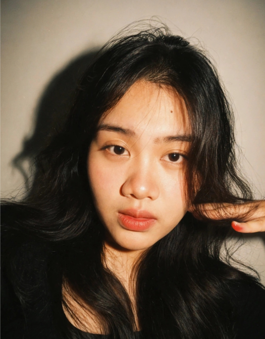

Halo, saya Ananda Ayu Rahmadani
Desainer grafis, UI/UX, dan motion graphics dengan pengalaman sejak 2019, kini juga membangun website dari desain sampai kode. Berasal dari Universitas Brawijaya Kota Malang dan terbuka untuk proyek WFO, WFA Maupun Hybrid.
Karya
Beberapa karya dari desain cetak, antarmuka, dan animasi, hingga website dan platform pembelajaran yang saya bangun untuk klien, UMKM, instansi, dan event kampus yang nantinya akan terus di update.

Tentang saya
Desainer grafis dan kreator visual dengan fokus pada desain grafis, UI/UX, dan motion graphics, sekaligus full-stack web developer, didukung dasar pengetahuan multimedia dan teknologi informasi. Berteman baik dengan CorelDRAW serta software desain lainnya untuk menghasilkan materi visual dan identitas visual yang konsisten, serta merancang antarmuka dan prototipe dengan pendekatan berpusat pada pengguna.
Selain desain, saya terbiasa menganalisis kebutuhan sistem, mengembangkan website dan LMS, serta menulis dokumentasi teknis. Terbiasa pula membuat konten visual dan animasi untuk mendukung kampanye pemasaran digital, serta menerjemahkan kebutuhan klien menjadi karya yang jelas, menarik, dan sesuai karakter brand.
Software keahlian
Dari CorelDRAW, Figma, dan Canva untuk desain, After Effects untuk animasi, sampai Visual Studio Code dan MariaDB untuk membangun website. Setiap alat dipilih agar ide bisa berjalan dari konsep sampai hasil jadi.
CorelDRAW
Sangat mahirFigma
Sangat mahirCanva
Sangat mahirVisual Studio Code
Sangat mahirAfter Effects
MahirIllustrator
MenengahPhotoshop
MenengahBlender
MenengahMariaDB
MenengahPremiere Pro
PemulaPengalaman kerja & event
Perjalanan dari desain grafis cetak dan motion graphics, ke UI/UX, sampai pengembangan web.
Freelance (Self employed)
- Motion Graphic Designer: membuat desain motion graphic dan konten visual beranimasi untuk platform digital.
- Graphic & UI/UX Designer: merancang desain grafis, antarmuka website dan aplikasi, wireframe, mockup, serta prototipe interaktif.
- Web Developer: membangun website responsif dan aplikasi web full-stack dengan HTML, CSS, JavaScript, back-end, dan database.
- System Analyst: menganalisis kebutuhan bisnis serta menyusun dokumentasi sistem, use case, dan diagram alur kerja.
- Technical Writer: menulis dokumentasi teknis, panduan pengguna, dan tutorial perangkat lunak.
- LMS Developer: mengembangkan dan menyesuaikan platform LMS berbasis Moodle, mulai dari struktur kursus, peran pengguna, hingga fitur pendukung pembelajaran digital.
QA Design
- CFO QA Design dan memegang bagian desain grafis pada desain stiker motor dan mobil, desain banner UMKM dan beberapa perusahaan yang order by QA serta desain cetak lainnya.
DPRD Kota Surabaya
- Magang sebagai perancang UI/UX website milik DPRD Kota Surabaya.
- Full-stack developer website DPRD Kota Surabaya.
RAJA Brawijaya
- Sebagai anggota divisi Motion Graphics, Multimedia & Perancangan 3D Maskot RABRAW.
- Pengoperasian software OBS pada event openhouse.
CV Royal Jaya
- Internship grafis desainer yang bekerjasama dengan tim digital marketing & ikut serta mengelola e-commerce.
- Sebagai fotografer produk yang bekerjasama dengan tim produksi.
Sertifikat
- Digital Marketing & Ekspor ImporKementrian Perdagangan Republik Indonesia · 2026
- Juara 3 Digital PosterFakultas Ilmu Administrasi Brawijaya · 2024
- Peserta Desain PosterUniversitas Negeri Surabaya · 2024
- Peserta Desain PosterFakultas Vokasi Universitas Brawijaya · 2024
Punya proyek?
Yuk ngobrol.
Terbuka untuk proyek freelance desain grafis, UI/UX, motion graphics, maupun pembuatan website. Ceritakan kebutuhanmu, saya bantu wujudkan.
anandayurahmadani@gmail.com